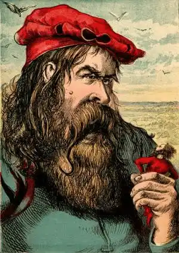
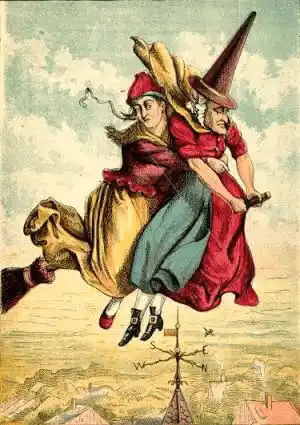
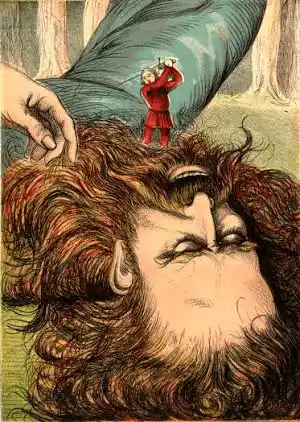

THE LITTLE OLD WOMAN WHO LIVED IN A SHOE -
THE LITTLE OLD WOMAN WHO LIVED IN A SHOE - Once on a time there was a Little Old Woman who lived in a Shoe. This shoe stood near a great forest, and was so large that it served as a house for the Old Lady and all her children, of which she had so many that she did not know what to do with them.
But the Little Old Woman was very fond of her children, and they only thought of the best way to please her. Strong-arm, the eldest, cut down trees for firewood. Peter made baskets of wicker-work. Mark was chief gardener. Lizzie milked the cow, and Jenny taught the younger children to read.
Now this Little Old Woman had not always lived in a Shoe. She and her family had once dwelt in a nice house covered with ivy, and her husband was a wood-cutter, like Strong-arm. But there lived in a huge castle beyond the forest, a fierce giant, who one day came and laid their house in ruins with his club; after which he carried off the poor wood-cutter to his castle beyond the forest. When the Little Old Woman came home, her house was in ruins and her husband was no where to be seen.
Night came on, and as the father did not return, the Old Lady and her family went to search for him. When they came to that part of the wood where the Giant had met their father, they saw an immense shoe. They spent a long time weeping and calling out for their father, but met with no reply. Then the Old Lady thought that they had better take shelter in the shoe until they could build a new house. So Peter and Strong-arm put a roof to it, and cut a door, and turned it into a dwelling. Here they all lived happily for many years, but the Little Old Lady never forgot her husband and his sad fate. Strong-arm, who saw how wretched his mother often was about it, proposed to the next eleven brothers that they should go with him and set their father free from the Giant. Their mother knew the Giant's strength, and would not hear of the attempt, as she feared they would be killed. But Strong-arm was not afraid. He bought a dozen sharp swords, and Peter made as many strong shields and helmets, as well as cross-bows and iron-headed arrows. They were now quite ready; Strong-arm gave the order to march, and they started for the forest. The next day they came in sight of the Giant's Castle. Strong-arm, leaving his brothers in a wood close by, strode boldly up to the entrance, and seized the knocker. The door was opened by a funny little boy with a large head, who kept grinning and laughing.

Strong-arm then walked boldly across the court-yard, and presently met a page, who took off his hat and asked him what he wanted. Strong-arm said he had come to liberate his father, who was kept a prisoner by the Giant; on this the little man said he was sorry for him, because the part of the castle in which his father was kept was guarded by a large dragon. Strong-arm, nothing daunted, soon found the monster, who was fast asleep, so he made short work of him by sending his sword right through his heart; at which he jumped up, uttering a loud scream, and made as if he would spring forward and seize Strong-arm; but the good sword had done its work, and the monster fell heavily on the ground, dead.
Now the Giant, who had been drinking much wine, was fast asleep in a remote part of the castle. Strong-arm had no sooner finished the Dragon, than up started the funny little boy who had opened the door. He led Strong-arm round to another part of the court-yard, where he saw his poor father, who at once sprung to his feet, and embraced him. Then Strong-arm called up his brothers, and when they had embraced their father, they soon broke his chain and set him free.
We must now return to the Little Old Woman. After her sons had started she gave way to the most bitter grief. While she was in this state, an old witch came up to her, and said she would help her, as she hated the Giant, and wished to kill him. The Old Witch then took the little Old Lady on her broom, and they sailed off through the air, straight to the Giant's castle.
Now this old Witch had great power, and at once afflicted the Giant with corns and tender feet. When he awoke from his sleep he was in such pain that he could bear it no longer, so he thought he would go in search of his missing shoe, which, like the other one he had in his castle, was easy and large for his foot. When he came to the spot where the Old Lady and her children lived, he saw his old shoe, and with a laugh that shook the trees, he thrust his foot into it, breaking through the roof that Strong-arm and Peter had put to it. The children, in great alarm, rushed about inside the shoe, and frightened and trembling, scrambled through the door and the slits which the Giant had formerly made for his corns. By this time the witch and the Little Old Lady, as also Strong-arm, his eleven brother and his father, were come up to the spot. Strong-arm and his brothers shot their arrows at him till at last he fell wounded, when Strong-arm went up to him and cut off his head. Then the father and the Little Old Woman and all their children built a new house, and lived happily ever afterwards.
🐌🐌END🐫🐪🐫
Published by Greatness Divine - Admin


Stay tuned to all our latest videos,songs,apps, and lots more on
the go at storyarchives social channels
 Explore Storyarchives Lite Apk 2MB Install Experience Easy Life By Staying Updated with Your Storyarchives Lite Apk 2MB From Realityworld Install Now
Explore Storyarchives Lite Apk 2MB Install Experience Easy Life By Staying Updated with Your Storyarchives Lite Apk 2MB From Realityworld Install Now